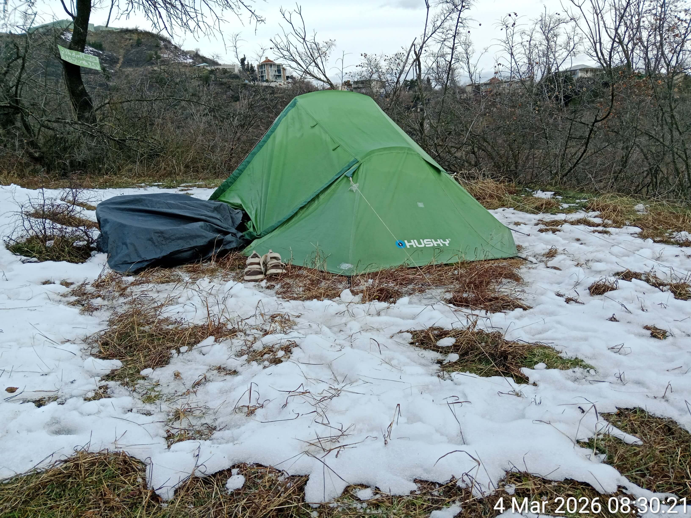

В этой палатке была создана Энциклопедия православного военного путинизма.

В этой палатке была создана Энциклопедия православного военного путинизма.
24.04.2024, в возрасте 66 лет, я была вынуждена бежать из России, спасаясь от преследования со стороны российских спецслужб, целью которого было мое физическое уничтожение. Но преследование продолжилось и за границей — в Турции и Грузии, где имеется огромное количество агентов российских спецслужб.
29.09.2024 я обратилась за убежищем в Швейцарии, предоставив доказательства невозможности моего возвращения в Россию. Однако рассмотрение моего дела в Секретариате по миграции (SEM) Швейцарии сопровождалось грубыми процессуальными нарушениями: мне не предоставили адекватного перевода Протокола интервью, мои ответы были искажены переводчиком, мои ключевые доказательства не были приняты SEM во внимание, в основу Решения были положены выдуманные обстоятельства и ложные "факты"; назначенное мне медицинское обследование было отменено без объяснения причин. В результате я получила необоснованный отказ в убежище и была депортирована в Грузию, где вновь оказалась в условиях преследования, на этот раз — на фоне гуманитарной катастрофы.
Два года я, 68-летняя одинокая женщина, жила в палатке на улице, без доступа к базовым условиям человеческой жизни:
• Холод и жара: зимой температура в палатке опускается ниже нуля градусов по Цельсию. Летом — поднимается до 50°С.
• Отсутствие медицины и гигиены: невозможность получить медицинскую помощь, невозможность какого-либо лечения (нет условий для хранения лекарств). Невозможность помыться и постирать вещи.
• Минимум ресурсов: питание — сухой паёк и холодная вода. Отсутствие электричества, отопления, кондиционера, холодильника. Отсутствие газа, зимнего снаряжения, теплой одежды и обуви.
Моя ситуация — это не только отсутствие жилища и условий для нормальной жизни. Российские спецслужбы осуществляют в отношении меня постоянное и систематическое трансграничное преследование:
• Возбуждение тотальной ненависти и вражды со стороны местного населения на основе клеветы, инсинуаций и сфабрикованных "улик".
• Отравления, в том числе радиоактивными веществами.
• Попытки убийства, замаскированные под несчастный случай (в том числе при помощи выведения из строя тормозов на моем велосипеде).
• Причинение вреда здоровью, в том числе систематические атаки на глаза.
• Запугивание, угрозы, физическое насилие.
• Целенаправленная кампания по систематическому лишению сна (с помощью системы электронных устройств, размещенных вокруг моей стоянки, запрограммированных на воспроизведение оглушительно громких звуков).
• Порча имущества (палатка, надувной матрас, велосипед).
• Саботаж сферы услуг (продажа некачественных и вредоносных товаров).
• Беспрецедентный цифровой террор: взлом моего смартфона и постоянные хакерские атаки, препятствующие моей творческой деятельности (блокировка и саботаж работы приложений и программ, в том числе ИИ, уничтожение и подмена данных, создание постоянных технических трудностей).
• Чудовищным актом давления со стороны российских спецслужб стало убийство моей матери в России 20 октября 2025 года.
Вся эта система трансграничного преследования имеет одну цель — убить или сломить мою волю: заставить меня замолчать, или вернуться в Россию, или свести счёты с жизнью. И именно поэтому я не молчу и продолжаю жить и творить, несмотря ни на что: технические трудности, условия жизни, сопоставимые с пыткой, психологическое давление, враждебность местного населения, недоступность медицины.
Моё творчество как писателя, сатирика, художника, разоблачающее войну и путинский режим, систематически блокируется на всех основных русскоязычных и некоторых международных платформах (9 социальных сетей и 2 литературных портала). Тотальная цензура — это лучшее доказательство идейной ценности, значимости и актуальности моего слова.
Настоящий проект — мой ответ тем, кто пытается меня уничтожить. В условиях, граничащих с бесчеловечным обращением, я создаю тексты, чтобы с их помощью:
• Разоблачать нескончаемый поток политического безумия, беспредела, лжи, цинизма и жестокости.
• Направлять внимание мировой общественности на потребности тех, кто страдает от войны и авторитарных режимов.
• Конвертировать это внимание в реальную помощь, стимулируя читателей делать прямые донаты в проверенные фонды поддержки Украины.
Каждая миниатюра, пьеса или статья, которые вы читаете, написаны ценой невероятных усилий: спартанская жизнь в палатке, в условиях невыносимой жары, холода, голода, постоянного преследования, отчаяния и безнадёжности.
Это не просто текст. Это — свидетельство мужества, несгибаемой воли и активного сопротивления. И одновременно — инструмент для помощи таким же, как я — пострадавшим, обездоленным и отчаявшимся.
27 мая 2026 года была совершена попытка моего физического устранения. Два дюжих мужика ночью перелезли через ограждение, разгромили мой палаточный лагерь на холмах Ваке (Тбилиси), целый час меня избивали, пытали, мучили, калечили. Сломали как минимум пять рёбер, проткнули лёгкое. Пневмоторакс, гемоторакс, пятьдесят ударов по голове, разрыв барабанной перепонки, множественные ушибы и гематомы головы и шеи.
Бандиты отобрали у меня все деньги, два телефона, зарядки, пауэрбанки, даже тройник для розетки — одним словом, все мои рабочие инструменты, а кроме того — 7 карт памяти с архивами и загранпаспорт. За паспортом лицемерно предложили наутро явиться в российское консульство.
И оставили умирать на вершине холма. Намеренно лишив меня всякой возможности добраться до больницы или вызвать службу спасения. Спуск с горы крутой и каменистый, ночью без фонаря спуститься невозможно, тем более — когда ты не можешь дышать из-за пневмоторакса, когда глаз заплыл, очки потеряны и ты ничего не видишь, когда коленки дрожат от пережитого ужаса и нестерпимой боли, а из-за стресса не работает голова... Они как раз на это и рассчитывали — что у меня не хватит сил и мужества, что я споткнусь и сломаю шею, свалюсь с обрыва, задохнусь и потеряю сознание.
Но я спустилась. Из последних сил сползла вниз, в парк Ваке, где, на счастье, сразу встретила людей, которые вызвали полицию и скорую помощь.

Место преступления: палатка изрезана ножом, каркас сломан, вещи разбросаны по земле.

Официальная справка из полиции, удостоверяющая факт нападения, причинения вреда здоровью, ограбления. Указан номер уголовного дела: 007280526001.

Основной платежный документ (их несколько) об оплате лечения из Кавказского медицинского центра в Тбилиси.
Если Вам понравилась книга — поддержите автора в меру своих возможностей.
Бандиты отняли у меня все сбережения, за лечение пришлось заплатить свыше 1500 долларов (деньги взяты в долг), требуется длительная реабилитация, нормальное жилье, питание и медикаменты.
МОЙ КОШЕЛЁК:
0x55D4819973eC8573dD2E4f709E366363804E1F18
Сеть: Polygon
Валюта:
USDT (Polygon)
USDC (Polygon)
MATIC / POL
Транзакция является прямой, анонимной и не поддается блокировке.